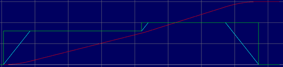
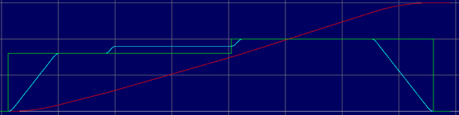
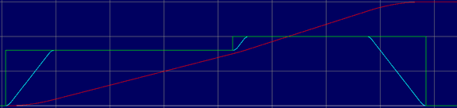
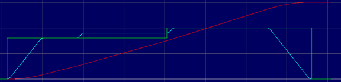

Axis Parameter
VP_OPTIONS = value
VP_OPTIONS AXIS(n) = value
This parameter controls the behaviour of VP_MODE = 6, with the default value of zero intending to provide functionality suitable for most motion applications. If necessary, the behaviour can be tailored by setting bits that control various aspects, with bits 0 and 1 enabling VP_MODE = 6 to behave more like VPU_MODE = 5, and the remaining bits controlling aspects mainly related to processor usage and accuracy.
Note that most applications use VP_MODE = 0 (the default VP_MODE), and so the default value of zero is normally adequate when migrating to VP_MODE = 6, but applications that use VP_MODE = 5 (usually PLC and RPS) may require adjustments to be made.
Bit 0 controls whether VP_MODE = 6 has a minimum move buffer depth of 5, which is the default behaviour of VP_MODE = 5.
Bit 1 controls whether VP_MODE = 6 binds the forced parameters with the axis parameters, i.e. FORCE_SPEED, FORCE_ACCEL, FORCE_DECEL and FORCE_JERK are bound to SPEED, ACCEL, DECEL and JERK respectively. When this bit is set, the axis parameters are overwritten when a move with forced parameters is loaded, and the axis parameters can subsequently be used to alter its motion, which is the default behaviour for VP_MODE = 5. When this bit is not set, the axis parameters are left untouched when a move that uses forced demands is loaded and the forced demands in place when the move was loaded are used throughout the move, which is the default behaviour of VP_MODE = 0.
Note that when bit 1 is set, that the axis demands will reset to the forced demands each time one move ends and another begins, so any changes made to the axis parameters will be lost and therefore require reapplying if required.
Bit 2 controls which VP_MODE is used when VP_MODE is set to 5. When unset, VP_MODE = 5 will be used, and when set, VP_MODE = 6 will be used instead. The sole purpose is to allow VP_MODE = 6 to be tested in an environment that specifies the use of VP_MODE = 5.
Note that this setting only alters what velocity profiling calculations are performed, so bits 0 and 1 should also be set if full compatibility is required.
Bit 3 controls whether the current look-ahead is invalidated when a demand factor, such as SPEED_FACTOR (including LOOKAHEAD_FACTOR), ACCEL_FACTOR or JERK_FACTOR change value.
Bit 4 controls whether the blend point is fine-tuned to hit the blend speed exactly on the move junction. The default is to fine-tune once when it is time to start adjusting the velocity profile to hit the blend point, but setting this bit disables this fine-tuning, which is less processor intensive.
Bit 5 controls whether fine-tuning is done once, which is the default, or is performed continuously until the blend point is reached. Continuous re-evaluation of the demands to hit the blend point accurately may be slightly more accurate (than doing it only once), but is more processor intensive.
|
Bit |
Description |
Value |
|
0 |
Auto-set LIMIT_BUFFERED |
1 |
|
1 |
Bind forced demands to axis demands |
2 |
|
2 |
VP_MODE 5 will use mode 6 instead |
4 |
|
3 |
No look-ahead invalidation on factor changes |
8 |
|
4 |
No fine-tuning to hit blend speeds |
16 |
|
5 |
Continuous fine-tuning to hit blend speeds |
32 |
The behaviour of can be shown using the below program and adjusting the VP_MODE and for VP_MODE = 6 changing the value of VP_OPTIONS.0:
DIM i AS INTEGER
INITIALISE
BASE(0)
VP_MODE = 6
VP_OPTIONS.0 = 1
i = 0
REPEAT
i = i + 1
FORWARD
WA(1) 'Allow time for move to load before seeing if it
has
UNTIL PMOVE
PRINT i; " moves loaded with VP_OPTION.0 = "; VP_OPTIONS.0
When VP_MODE = 0 (VP_OPTIONS is irrelevant), the following is printed:
3 moves loaded with VP_OPTION.0 = 0
When VP_MODE = 5 (VP_OPTIONS is irrelevant), the following is printed:
7 moves loaded with VP_OPTION.0 = 0
When VP_MODE = 6 and VP_OPTIONS.0 = 0, the following is printed:
3 moves loaded with VP_OPTION.0 = 0
When VP_MODE = 6 and VP_OPTIONS.0 = 1, the following is printed:
7 moves loaded with VP_OPTION.0 = 0
The reason that 3 is printed is that the default setting after INITIALISE for LIMIT_BUFFERED is 1, so 3 moves can be loaded, one that immediately becomes active, one waits in the axis move buffer and one waits in the process move buffer until space is available in the axis move buffer. This is how VP_MODE = 0 always operates and how VP_MODE = 6 operates when VP_OPTIONS.0 = 0 (the default for all VP_OPTIONS is 0).
The reason that 7 is printed is that VP_MODE = 5 and VP_MODE = 6 in conjunction with VP_OPTIONS.0 = 1 enforces a minimum axis move buffer depth of 5, so 7 moves are loaded in total, one active, five waiting in the axis move buffer and one waiting in the process move buffer.
Make VP_MODE 6 bind the forced demands to the axis demands to allow motion to be adjusted during profiling.
The behaviour of the various VPUs can be shown using the program below:
BASE
(
0
)
UNITS =
10000
SPEED =
100
ACCEL =
100
DECEL = ACCEL
JERK =
1000
VP_MODE =
6
VP_OPTIONS
.1
=
0
'0: VP_MODE = 0 behaviour; 1: VP_MODE = 5 behaviour
MERGE =
ON
AXIS_BLENDING =
1
DEFPOS
(
0
)
FORCE_SPEED =
80
MOVESP
(
300
)
FORCE_SPEED =
100
MOVESP
(
300
)
WAIT
UNTIL
MPOS >
100
SPEED =
90
Trace for VP_MODE = 0:

Trace for VP_MODE = 5:

Trace for VP_MODE = 6 with VP_OPTIONS.1 = 0:

Trace for VP_MODE = 6 with VP_OPTIONS.1 = 1:

Make VP_MODE 5 profile motion using VP_MODE 6.
VP_MODE = 5 'Use VP_MODE 5 (note: overridden by bit 2 below)
VP_OPTIONS.0 = 1 'Assume LIMIT_BUFFERED is at least 5
VP_OPTIONS.1 = 1 'Bind forced demands to axis demands
VP_OPTIONS.2 = 1 'Call VP_MODE = 6 rather than 5
This setting is only required in scenarios where the VP_MODE cannot easily be changed from 5 to 6, so it can be fooled into using VP_MODE = 6.
INITIALISE , LIMIT_BUFFERED , PMOVE , VP_MODE